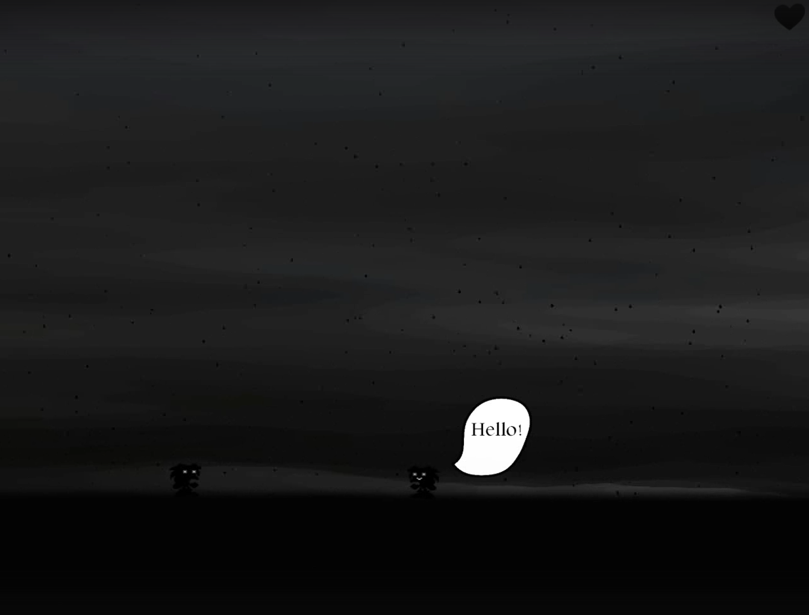
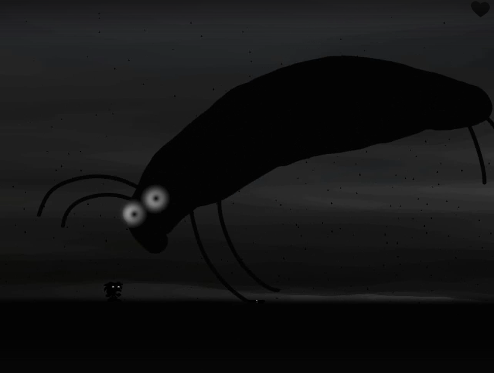
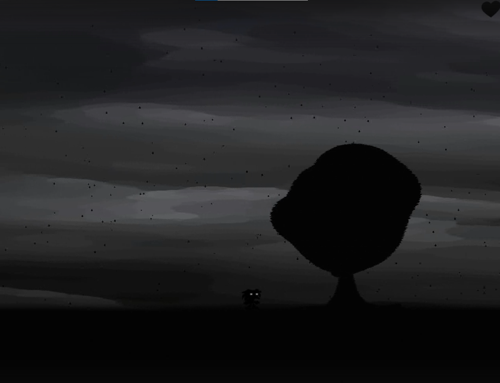
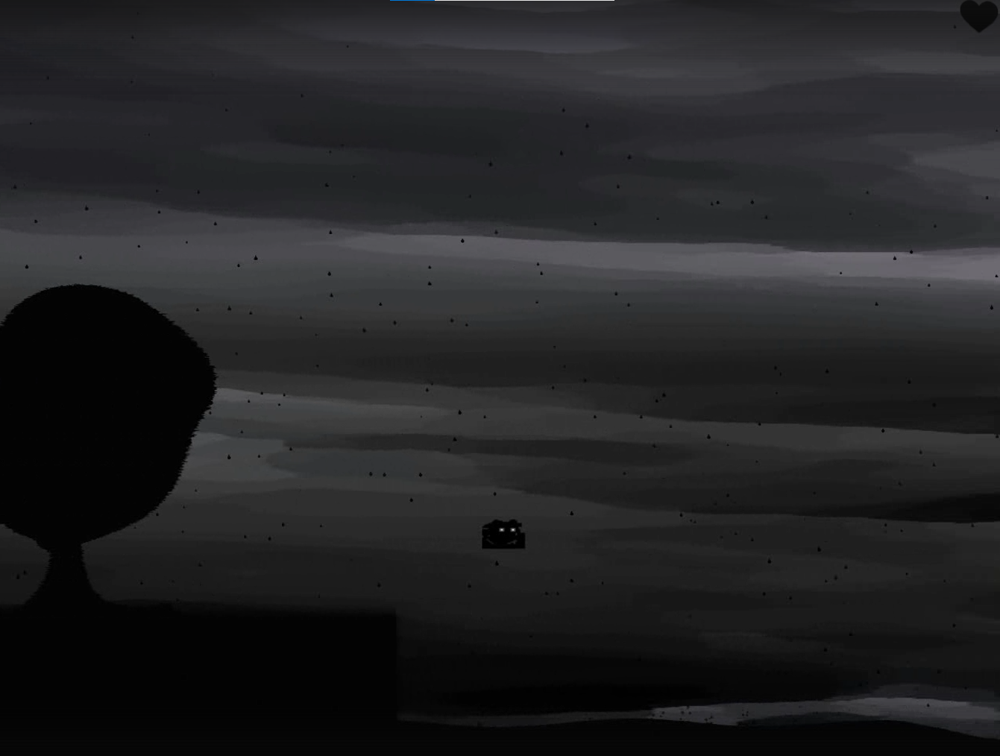
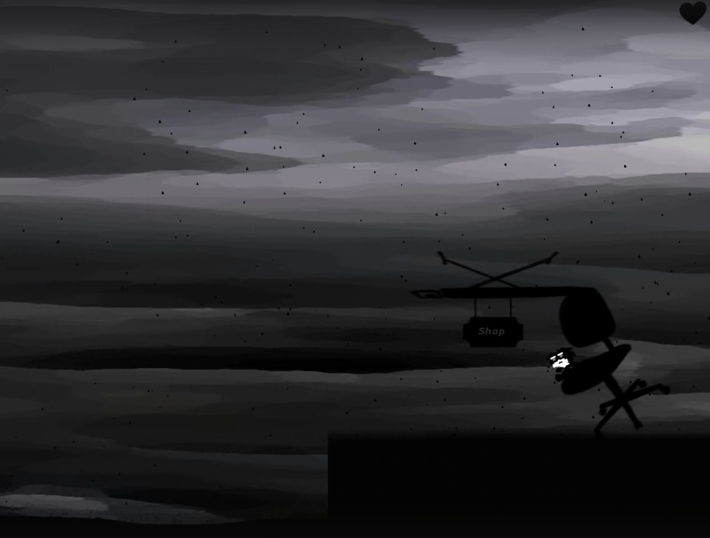

Platformer / Atmospheric
2015 · Construct Classic
Атмосферный 2D-платформер, вдохновлённый эстетикой игры Limbo. Игра повествует о загадочном существе, путешествующем через серый дождливый мир. Основной акцент сделан на создании гнетущей атмосферы через минималистичную чёрно-белую графику, звуковой дизайн и дизайн уровней. Механики просты, но уровни требуют внимательности и точного тайминга.
Создать атмосферный платформер с минималистичной графикой, передающий настроение одиночества и загадочности через визуальный ряд и геймплей.
Создан завершённый платформер с несколькими уровнями, атмосферным визуальным рядом и звуковым сопровождением. Один из первых проектов автора, заложивший основу для дальнейшего развития в геймдеве.




